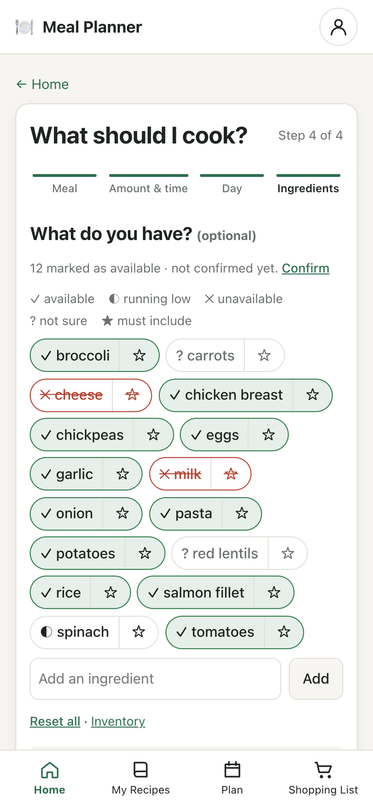
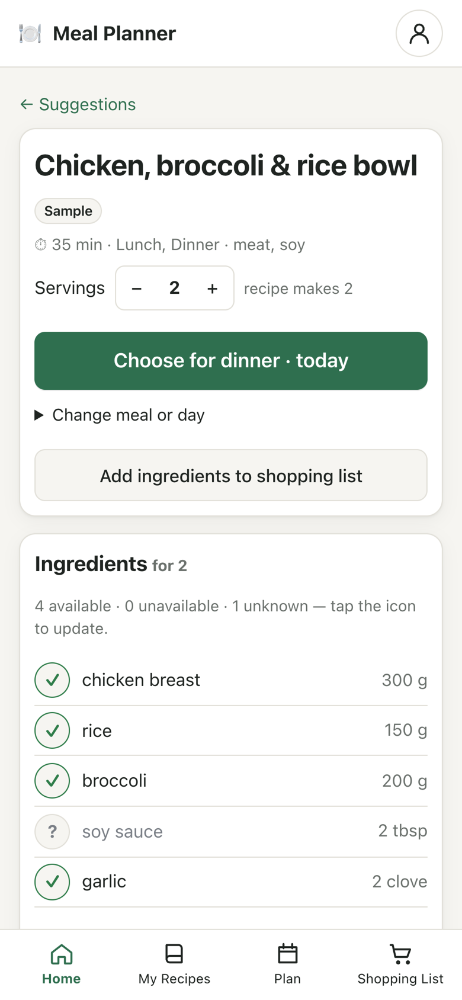
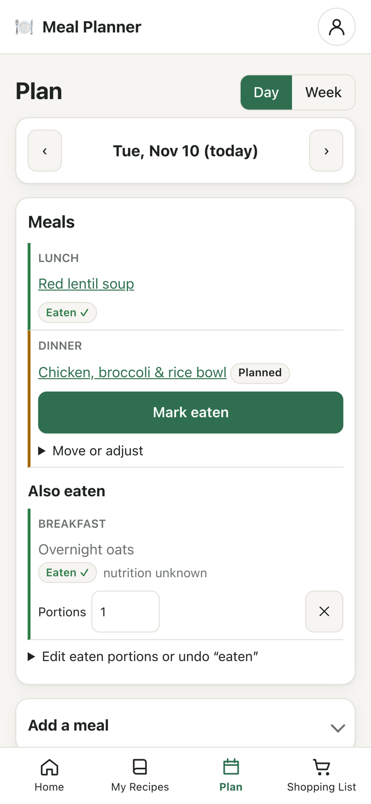
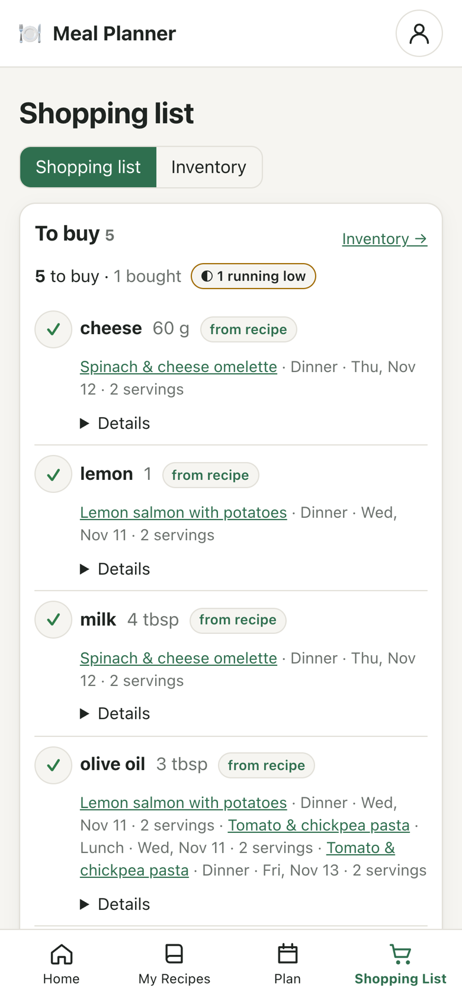
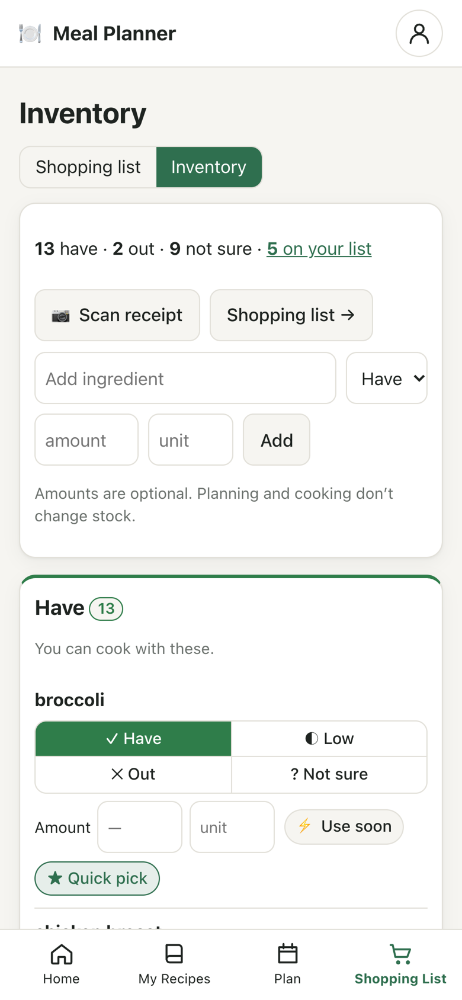

Product case study · Functional prototype
Meal Planner
Decide what to cook from the recipes you already have.
A browser-based prototype that ranks your own recipes by what’s in your kitchen, how much time you have and what you’ve eaten this week. It then carries the choice through to your plan and a shopping list that keeps itself in sync. There’s no account and no backend.

- My role
- Problem definition, exploratory benchmarking, prioritisation, requirements, iteration
- Approach
- AI-assisted design and implementation
- Stage
- Personal prototype; user validation not yet started
- Built with
- Vanilla JavaScript ES modules, browser storage, no build step
The problem
The hard part isn’t planning a week. It’s choosing the next meal.
The project started from my own cooking for two: deciding what to make when nothing comes to mind, with the ingredients already at home, the time available, and some attention to calories, protein, fibre and variety. In an exploratory trial of Eat This Much, the suggested meals didn’t reflect what I had at home, and I wanted my own familiar recipes to come first. That one trial shaped the workflow; it isn’t a verdict on that app.
How might I make choosing the next meal easier without requiring a complete weekly plan, a fully maintained pantry, or detailed food logging?
How it works
From “what do I have?” to a planned meal and a shopping list
-
Answer four short questions
Pick the meal, servings and time limit, the day, then tap through the ingredients you have: available, running low, out, or not sure. Star anything the meal must include.
- Every step is optional except the meal
- “Not sure” is never treated as missing

-
Get up to three ranked, explained matches
Hard filters come first: meal type, time limit, diet and allergies, and required ingredients. The recipes that pass are scored out of 100: ingredients 50, nutrition fit 25 and variety 25.
- Each card shows what’s missing or unconfirmed, and why it ranked where it did
- If nothing fits, the app counts what each filter ruled out and offers single changes with exact counts
-
Choose it for the meal
The recipe page scales ingredients to your servings and shows what you have. Choose for dinner puts it on the plan without marking it eaten, and Add ingredients to shopping list opens a review before anything is added.
- Missing, unknown and running-low items are preselected
- Every action can be undone

-
Plan the day, log what you actually ate
Day and week views separate what’s planned from what’s eaten. You mark a meal eaten yourself, adjust your portion, or log something that isn’t a saved recipe.
- The log keeps a copy of the recipe, so editing the recipe later doesn’t rewrite history
- Nutrition totals say “partial” instead of counting unknown values as zero

-
A shopping list that follows the plan
Ingredients merge across meals, but only when their units are compatible. Each item shows which meals it came from. Change a meal’s servings or remove it, and the linked amounts recalculate with a visible note.
- No double counting when a recipe is added twice
- Ticking an item off updates the inventory

Key decisions
Incomplete data shouldn’t produce confident answers
Reviewing the original feature ideas turned up places where a straightforward build would mislead people. Most of the design work went into handling the unknowns honestly. The full reasoning is in the case study and the nutrition and diet spec.

Counting it as zero made recipes with real values rank below recipes with no data.
Name matching can’t see inside packaged products, so it must not imply a guarantee.
Changing cooked servings would silently change the shopping list too.
Standard multipliers already include exercise, so the same activity was counted twice.
It’s a pattern to lean toward, not a list of banned foods. As a filter it would hide most recipes.
Where it stands
A working prototype makes the idea testable. It doesn’t prove it.
Everything runs in the browser and stays there. Receipt scanning, web recipe ideas, diet filters and nutrition targets are all optional and off by default.
Checked so far
- 67 logic tests for scoring, filters, units, the shopping list, diet classification and storage migrations
- Main journeys tested by hand in the browser at desktop and 375 px phone widths
- Receipt import tested with real on-device OCR on a generated receipt
- Honest fallbacks: “not sure” states, partial totals, an empty state that explains itself
What I’d validate next
- Time from starting discovery to choosing an acceptable meal, and how often the first list is enough
- Whether ingredient input is worth the effort, and how often stale stock leads to unsuitable suggestions
- How many real recipes someone needs before personal-first suggestions feel useful
- Whether the four-step wizard beats a compact preferences form
- Whether people can tell actual, projected and incomplete nutrition totals apart
No user interviews, usability results or retention metrics are claimed. Implementation details are in the technical notes and the full documentation. The allergen checks are not an allergy safeguard, and the nutrition estimates aren’t medical advice. Sample recipes deliberately carry no nutrition values.
The full story
How the idea was tested against existing apps, what changed between iterations, and what still needs validating with users.